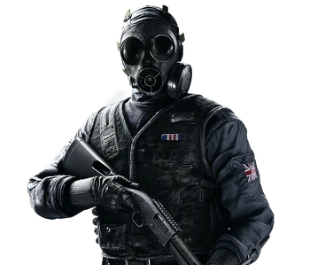

Mike Baker, codenamed "Thatcher"
GPS satellites? Unmanned drones? Fookin' laser sights?
The more crutches you have, the more it hurts when they're kicked out from under ya. If there's one thing I know for sure, it's that a six inch blade never loses reception.
Gameplay Description
A Medium Health Operator, Thatcher is equipped with three EG MKO-EMP Grenades. These grenades disable all electronics that are within its area of effect.
Device Description
Uses EMP Grenades to disable any electronics in range
The EMP's efficiency in anti-electronic warfare has been known and studied since the early 1960s and features prominently in media depictions, but practical battlefield applications have eluded CTU squads until very recently. Team Rainbow's engineers recently made a breakthrough in solving the problem of creating a localized fission reaction, while keeping gamma radiation to tolerable levels, resulting in the EG MKO-EMP Grenade, a personal handheld device. No one is more suited to wield this novel device than Thatcher, known for his warnings against over-reliance on technology.